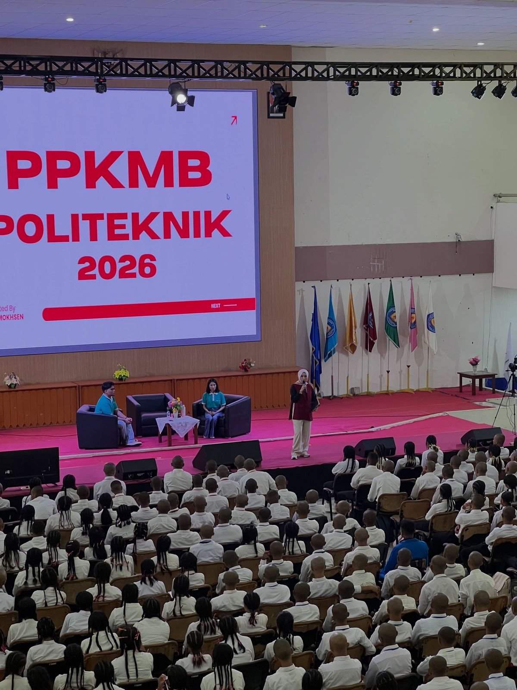
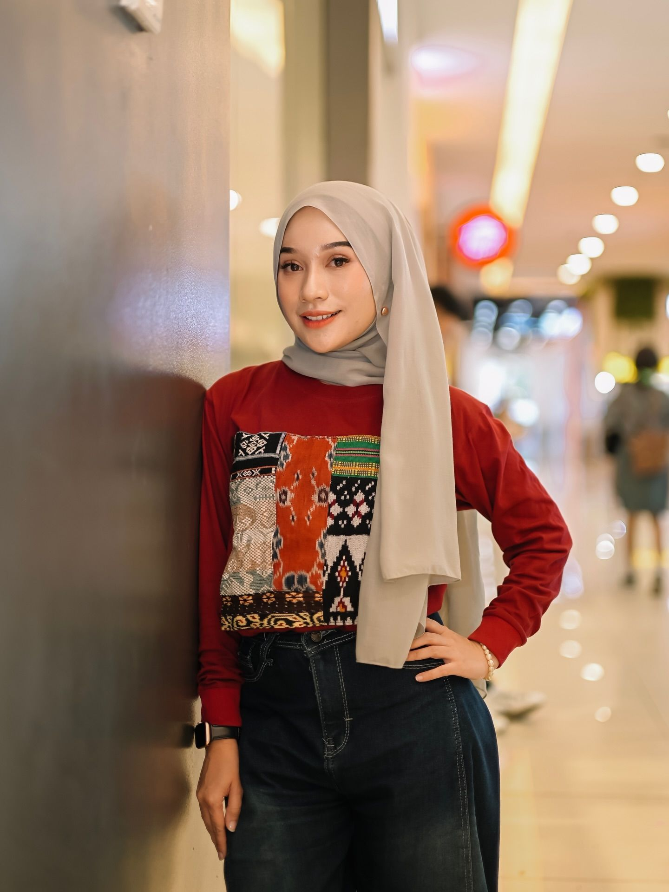
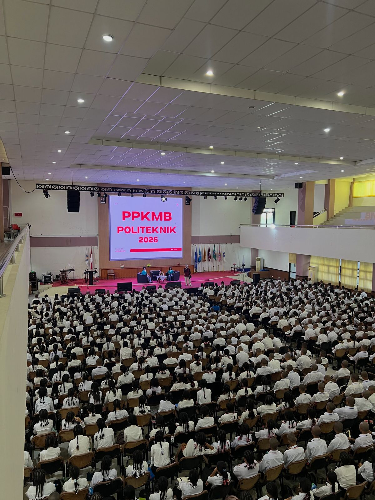
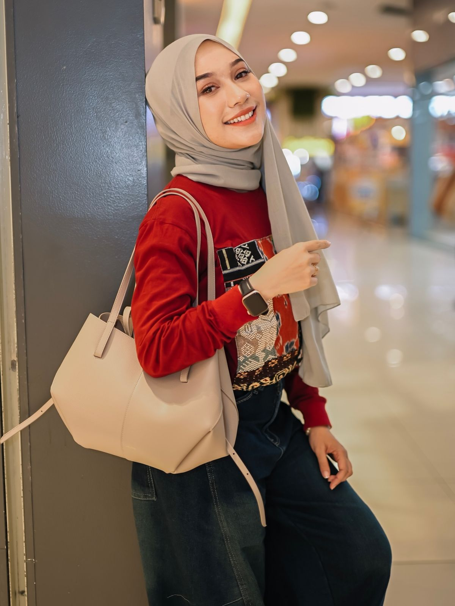
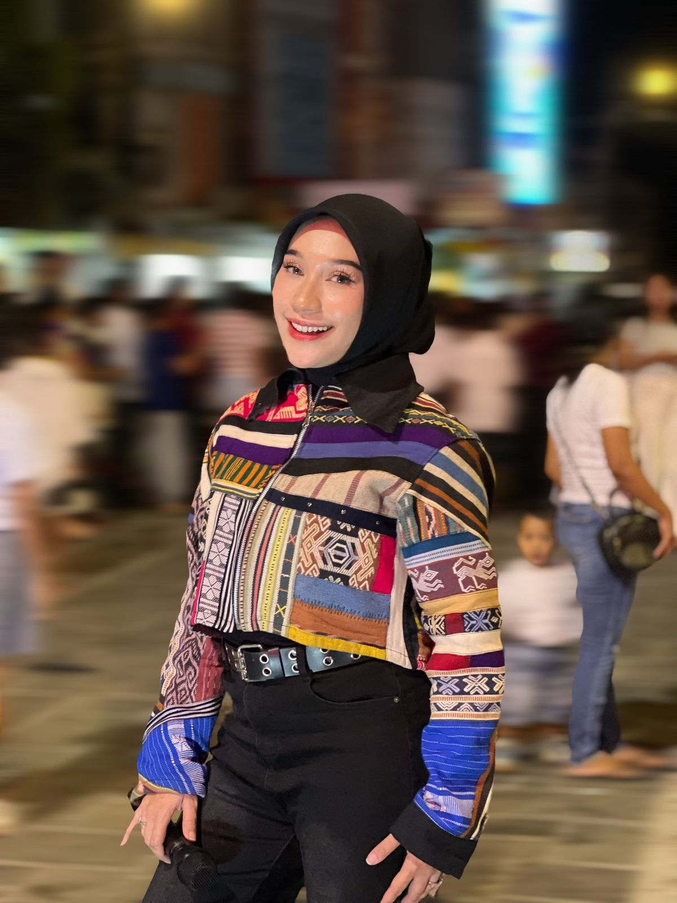

Public Speaking
Tips berbicara di depan umum, presentasi, dan komunikasi yang percaya diri — berbasis ilmu komunikasi.
Hai, saya Hilmi Mokhsen — content creator dari Kupang dan dosen Universitas Nusa Cendana. Saya ngonten soal pendidikan, pengembangan diri, dan public speaking untuk anak muda NTT.
Influencer &
Content Creator NTT

Data per Oktober 2026
Manifesto
Bagi saya, konten adalah ruang belajar bersama. Dari Kupang, saya berbagi tentang pendidikan, pengembangan diri, dan keberanian untuk bicara — karena komunikasi yang baik bisa membuka banyak pintu, untuk siapa pun di NTT.
Profil singkat
Hilmi Mokhsen — nama lengkap Hilmiyatillah Mokhsen, S.Sos., M.I.Kom. — adalah influencer dan content creator asal Kupang, Nusa Tenggara Timur. Lewat Instagram, TikTok, dan YouTube, Hilmi membagikan konten seputar pendidikan, pengembangan diri, public speaking, gaya hidup, dan kuliner NTT — dekat dengan keseharian anak muda NTT.
Di luar layar, Hilmi adalah dosen di Universitas Nusa Cendana (Undana) — lulusan S1 Komunikasi dan Penyiaran Islam UIN Syarif Hidayatullah Jakarta dan S2 Ilmu Komunikasi Undana — sekaligus pembicara dan MC di berbagai acara di NTT. Kiprahnya di depan kamera sudah dimulai sejak menjadi finalis Sunsilk Hijab Hunt 2016 di Trans7. Latar akademik ini membuat setiap konten dan kampanye brand dikemas dengan pesan yang jelas, jujur, dan mudah diterima audiens.
Perjalanan Hilmi sebagai kreator digital bahkan menjadi objek penelitian ilmiah: peneliti Undana mengkaji representasi budaya dan identitas digitalnya dalam jurnal MUKASI (2026).
Empat hal yang selalu jadi benang merah konten @hilmimokhsen.

Tips berbicara di depan umum, presentasi, dan komunikasi yang percaya diri — berbasis ilmu komunikasi.

Konten edukatif yang ringan dari sudut pandang seorang dosen — tentang kuliah, belajar, dan dunia akademik.

Mindset, kebiasaan baik, buku yang dibaca, dan cara bertumbuh jadi versi terbaik diri sendiri.

Review kuliner dari Kupang sampai Ende, coffee shop favorit, OOTD, dan beauty — sekaligus ruang promosi brand lokal NTT.
Semua penawaran kerja sama diproses melalui DM Instagram @hilmimokhsen.
DM Instagram@hilmimokhsen · Instagram